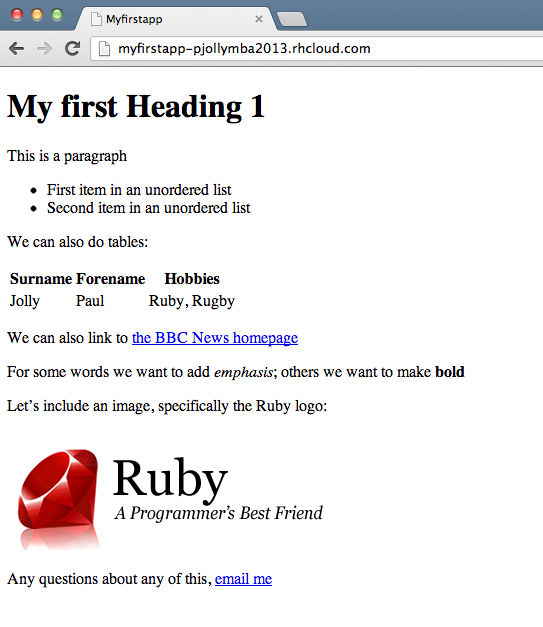

As a follow up to Session 2, please ensure you have worked through and completed each of the following steps:
lbscoding_v03 files in VirtualBox; I will be around in school so call/email me and we can get this setup, remove any old files etc (takes about 10-15 minutes)myfirstapp)myfirstapp on your VirtualMachine and that an identical version is running in the PaaS. Update the content in the index view to match my version (hint: remember you can view the HTML source of my version to see how the page is structured)
As I stressed during the information session, this course was only ever going to touch on the most important aspects of developing a web application, i.e. focussing on breadth vs depth. We aren’t going to be a class of expert Ruby programmers for example.
So after each session I will suggest additional reading/learning.
We haven’t really focussed much yet on Ruby as a programming language. Instead we have been issuing commands to Rails to generate code for us. And that said, we have only very briefly touched on the fact that Rails is a framework designed to help programmers build web applications. But hopefully you can see we’ve had to strike a balance between the high level theory and the practical aspects of actually building something to demonstrate progress.
But in building any substantial web application we need to truly understand Ruby the language.
There are some great resources out there on the web, here are links to just a few:
Editing the index view gave us our first glance of HTML (those who have designed webpages before will be ahead here). HTML is ultimately the principal output of any web application.
The W3Schools HTML Tutorial is as good a place to start as any.
But as you saw you can view the source of any webpage/webapp and learn by seeing how others do things. Starting with the tutorial however will give you a good grip on the basics